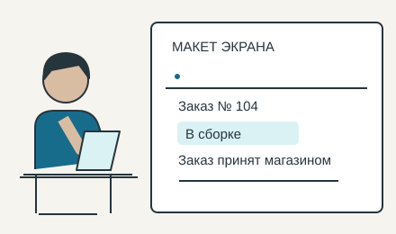
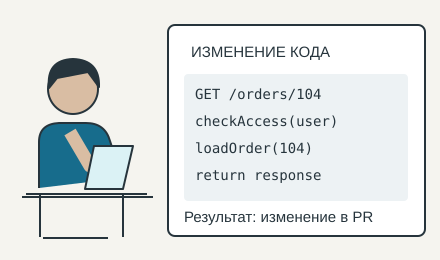
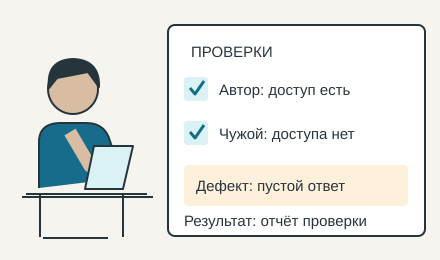
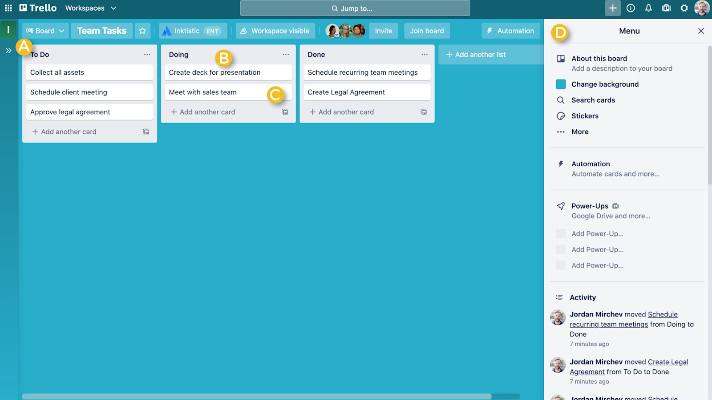
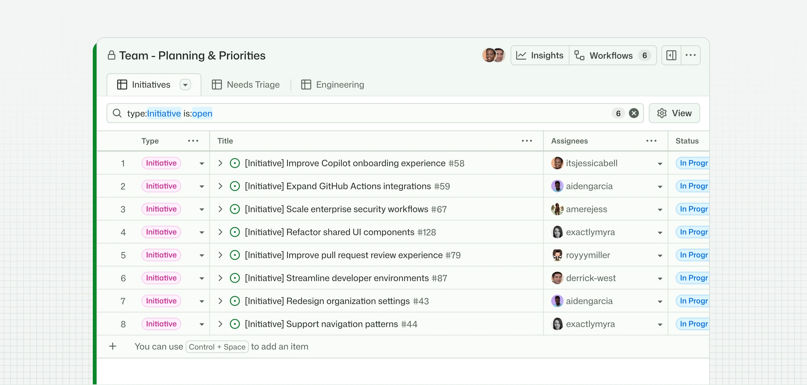

Что и зачем развивать?
Кому нужен сервис? Почему обращения теряются? Что полезнее для первой версии: состояние заявки или уведомления? Стали ли пользователи получать помощь понятнее и быстрее?
Управление программными проектами · Введение
01 / 18
В лекции разобраны управление продуктом и проектом, роли команды, подходы к организации разработки и рабочие инструменты. Сквозной пример — создание сервиса заявок колледжа.
Сервис помогает регистрировать обращения и получать ответ техника. Проверяем, решает ли он проблему потерянных заявок.
Команда за четыре недели передаёт согласованную первую версию. Для этого определяет объём, сроки, ответственность и проверки.
В Битрикс24 хранятся задачи, сроки и договорённости. По ним команда отслеживает выполнение проекта.
За пару: пройдём от проблемы пользователя до выбора способа работы и набора инструментов. Со следующего занятия начнём организовывать проект в Битрикс24.
Зачем этот раздел: увидеть работу, которую нельзя заменить написанием кода.
В колледже заявки на ремонт компьютеров приходят в чат, по телефону и на бумаге. Часть теряется. Преподаватели не понимают, принята ли заявка, а техник получает несколько сообщений об одной неисправности.
Команде из четырёх студентов предлагают за четыре недели сделать сервис заявок. Заказчик говорит: «Хочу, чтобы всё было удобно».
Без согласованного сценария участники могут реализовать несвязанные функции. Форма зарегистрирует заявку, но ответственный за её обработку останется не определён. Поэтому до реализации нужно согласовать весь путь обращения: отправку, принятие и ответ пользователю.
Управление — это выбор целей, организация работы и корректировка действий по результатам проверки. Команда определяет проблему, ближайшую работу и ответственных. Затем согласует ресурсы и условия завершения работы.
Эти решения образуют повторяющийся цикл. Он нужен и маленькой студенческой команде, и большому отделу.
Проверка возвращает команду к плану: если заявка создана, но техник её не видит, нужно изменить решение. Отчёт о готовности формы подтверждает лишь часть согласованного сценария. Проверять продвижение и корректировать работу нужно в течение всего проекта.
Задача «Сделать форму заявки» оставляет открытыми вопросы о сохранении данных и доступе техника. Команда уточняет ожидаемый результат до начала реализации.
Теперь участники могут разделить реализацию формы, обработчика и хранилища. Общий сценарий позволяет проверить, работают ли эти части вместе.
Цель можно рассматривать со стороны пользы для пользователя и со стороны выпуска конкретной версии. Разделим эти два взгляда.
Зачем этот раздел: связать цель проекта, этапы работы, договорённости и приёмку результата.
Программный продукт — программное решение, которое создают и развивают для удовлетворения потребностей пользователей. Для нашего примера это сервис заявок: пользователи обращаются за помощью, техник принимает обращения, заказчик оценивает, решена ли проблема с потерями.
Проект — временная работа, направленная на создание уникального результата. В нашем случае проект — подготовить и передать первую версию сервиса за четыре недели. После сдачи проект может завершиться, а продукт продолжит работать и развиваться.
Кому нужен сервис? Почему обращения теряются? Что полезнее для первой версии: состояние заявки или уведомления? Стали ли пользователи получать помощь понятнее и быстрее?
Что войдёт в первую версию? Кто сделает приём заявки? Какие работы зависят друг от друга? Что меняем, если не успеваем к сроку?
Важны оба взгляда. Можно сдать проект вовремя, но получить ненужный продукт. Можно придумать полезный продукт, но не суметь организовать его выпуск. Дисциплина посвящена управлению проектами, поэтому продуктовый взгляд нужен нам для выбора осмысленной цели.
Фраза «всё должно быть удобно» не помогает принять работу. Превратим её в конкретную договорённость.
| Уровень | Наш пример |
|---|---|
| Проблема | Пользователь не знает, принята ли его заявка |
| Польза продукта | Пользователь видит, что обращение зарегистрировано и принято в работу |
| Результат проекта | Первая версия с созданием заявки, списком для техника и просмотром состояния |
| Критерий приёмки | После отправки пользователь получает номер заявки. После принятия техником состояние меняется на «В работе» и видно пользователю |
В последней строке описано наблюдаемое поведение. Его можно проверить на демонстрации. Это критерий приёмки — условие, по которому заказчик принимает конкретный результат.
Объём работ, срок и ресурсы связаны. Если за те же четыре недели заказчик добавляет мобильное приложение, прежний план нужно пересмотреть. Можно уменьшить другой объём, сдвинуть срок или изменить ресурсы. Дополнительный человек тоже требует времени на знакомство с проектом.
Жизненный цикл проекта — путь от его начала до завершения. Названия этапов и порядок согласований зависят от организации. Схема показывает общую логику на примере выпуска сервиса заявок.
Стрелки показывают движение к завершению проекта. Планирование и контроль продолжаются во время выполнения: команда уточняет задачи по результатам проверок. Контроль включает сравнение объёма, сроков, затрат и качества с договорённостями. По найденным отклонениям принимают решения.
Создавать продукт можно частями, повторяя разработку и проверку. Эта обзорная схема не предписывает единственный порядок разработки. После завершения проекта сервису нужны эксплуатация, поддержка и дальнейшее развитие. Заранее согласуют, кто принимает обращения и отвечает за работу сервиса.
Чтобы участники одинаково понимали решения, их фиксируют в рабочих материалах. Такие результаты работы называют артефактами. Формат зависит от команды: достаточно связанных записей в задачах, таблице или документах. В карточках показано, какие сведения нужны для управления нашим проектом.
Объяснить ожидаемую пользу и согласованный объём.
В сервисе заявок: В первой версии: отправка заявки, список техника, состояние. Мобильное приложение остаётся за её границами.
Уточнить поведение и способ проверки результата.
В сервисе заявок: После отправки появляется номер; автор может просмотреть состояние своей заявки.
Связать задачи, ответственных, зависимости и сроки.
В сервисе заявок: Проверка полного сценария начинается после готовности формы и сохранения данных.
Подготовить действия и отслеживать их выполнение.
В сервисе заявок: Возможна задержка доступа к серверу; назначен ответственный за проверку доступа.
Сохранить актуальные договорённости и причины отклонений.
В сервисе заявок: Уведомления перенесены в следующую версию; проверка доступа ещё выполняется.
Подтвердить готовность и передачу результата.
В сервисе заявок: Проверен путь заявки; заказчик принял версию; назначена сторона, отвечающая за поддержку.
Карточки связывают цель, организацию работы и доказательства результата. Один документ может объединять несколько видов сведений. Для каждой записи нужно понимать, кто её обновляет и где находится актуальная версия. Список выполненных задач дополняют результатами проверок и решением о приёмке.
Риск — неопределённое событие или условие, которое может повлиять на цели проекта. Здесь рассматриваем угрозы срокам и результату; риски также могут создавать возможности. Проблема — уже возникшая ситуация, требующая решения. Запрос на изменение — предложение пересмотреть согласованные требования, объём, сроки или другие договорённости.
В карточках показаны три ситуации одного проекта. Их различие определяет ближайшее действие команды.
Разрешение ещё согласуют. Задержка может помешать демонстрации.
Действие: назначить ответственного, проверить срок выдачи доступа и подготовить резервную среду.
Команда уже не может развернуть версию для проверки.
Действие: выяснить причину, назначить восстановление доступа и оценить влияние на ближайший срок.
Заказчик предлагает расширить первую версию.
Действие: уточнить пользу, оценить трудоёмкость и влияние на план. Согласовать принятие, перенос или отклонение запроса.
В первой карточке команда готовится к возможному событию. Во второй устраняет препятствие, которое уже мешает работе. В третьей оценивает предложение до изменения плана. Риск может реализоваться и стать проблемой; решение проблемы иногда требует согласованного изменения.
Обнаруженный дефект — несоответствие результата требованию. Например, доступ постороннего пользователя к чужой заявке. Дефект регистрируют и определяют порядок исправления. Он может стать проблемой проекта, если препятствует приёмке.
Для обновления рабочих материалов и принятия решений об изменениях нужно распределить ответственность между участниками.
Зачем этот раздел: понимать, к кому обращаться с вопросом о пользе, сроке или качестве.
В работе участвуют разные стороны. Заинтересованная сторона, или stakeholder, — человек или организация, которые влияют на проект либо затронуты его результатом. Заказчик, пользователь и участник команды могут иметь разные ожидания.
| Участник или роль | За что отвечает | Пример решения |
|---|---|---|
| Заказчик | Согласует ожидаемый результат и условия его приёмки | «В первой версии нужен путь от отправки до принятия заявки» |
| Пользователь | Работает с продуктом; его опыт помогает проверить решение | «Я отправил заявку, но не понимаю, дошла ли она» |
| Product Manager · продуктовый менеджер | Исследует потребности, помогает выбирать направление и приоритеты продукта | «Сначала показываем состояние заявки, затем проверяем необходимость уведомлений» |
| Project Manager · руководитель проекта | Организует выполнение согласованной работы: план, взаимодействие, сроки и риски | «Проверку доступа нужно закончить до демонстрации» |
| Команда разработки | Проектирует, реализует и проверяет решение | «Чтобы заявка сохранялась, нужны форма, обработчик и хранилище» |
Участники работают с разными частями одной задачи. Авторские иллюстрации показывают условные рабочие ситуации и результаты. Реальные интерфейсы программ могут выглядеть иначе.

Выбирает направление развития продукта. Исследует потребности и сопоставляет возможные улучшения.
В сервисе заявок. После интервью выясняется: пользователям нужен ответ о принятии заявки. Менеджер предлагает проверить эту функцию раньше уведомлений.

Организует выполнение согласованного объёма. Отслеживает сроки, зависимости и риски.
В сервисе заявок. Проверка сценария зависит от готовности API — интерфейса обмена данными. Руководитель согласует эту зависимость с разработкой и тестированием.

Уточняет потребности, сценарии и ограничения. Описывает проверяемые требования. Бизнес-аналитик исследует потребности и процессы; системный аналитик уточняет устройство решения и взаимодействие его частей.
В сервисе заявок. Аналитик уточняет, кто видит заявку: её автор, назначенный техник или вся служба поддержки. Затем фиксирует правило доступа.

Проектирует взаимодействие пользователя с продуктом и внешний вид экранов. UX означает пользовательский опыт, UI — пользовательский интерфейс. Дизайнер проверяет понятность предложенного решения.
В сервисе заявок. На макете заявки дизайнер размещает номер, состояние и ответ техника. По макету проверяет, понятен ли результат отправки.

Проектирует техническое решение, пишет код и проверяет его работу. Участвует в оценке задач и проверке изменений команды.
В сервисе заявок. Разработчик реализует получение заявки и проверку прав. Передаёт изменение на просмотр другому участнику через pull request — предложение включить код в репозиторий.

Проверяет поведение продукта и сообщает о несоответствиях требованиям. QA означает обеспечение качества — более широкую область, чем тестирование. Здесь показана работа специалиста по тестированию.
В сервисе заявок. Тестировщик открывает заявку под автором и посторонним пользователем. Если чужая заявка доступна, фиксирует шаги, ожидаемый и фактический результат.
Иллюстрации читаются от действия к результату: выбор приоритета, планирование зависимости, правило доступа, макет, код и проверка. Эти результаты связаны одной функцией — просмотром состояния заявки.
Для функции «Просмотр состояния заявки» нужно согласовать несколько решений. Схема показывает связи результатов работы; обсуждения и возвраты между участниками возможны на любом этапе.
Координация на всём протяжении работы: руководитель проекта согласует сроки, зависимости и передачу результата между участниками.
Руководитель проекта участвует на протяжении всей работы. Решение о полезности функции уточняется по обратной связи пользователей. За качество отвечают все участники; тестировщик предоставляет результаты проверок.
Распределение обязанностей зависит от организации и команды. В небольшой команде один человек может совмещать несколько ролей. Здесь показаны типовые зоны ответственности; состав повседневных задач различается. Явное распределение ответственности помогает согласовывать решения. Руководитель проекта не должен становиться единственным человеком, который знает состояние работы.
Работодатели используют разные названия для похожих обязанностей. Ниже — срез шести поисковых запросов hh.ru. Полосы показывают число результатов каждого запроса; подписи ведут к соответствующей выдаче.
Общая шкала: от 0 до 4 506 результатов. Длина полосы пропорциональна числу результатов. Запросы и данные среза (JSON).
| Поисковый запрос | Результатов |
|---|---|
| Разработчик | 4 506 |
| Project manager | 2 610 |
| Тестировщик | 966 |
| Product manager | 886 |
| Системный аналитик | 623 |
| UX/UI дизайнер | 67 |
В этом срезе запрос «Project manager» дал 2 610 результатов, а «Product manager» — 886. Это разные поисковые формулировки с разным составом выдачи. Например, среди результатов «Product manager» встречаются вакансии в fashion — индустрии моды.
Сначала проверьте отрасль и продукт компании. Затем сопоставьте обязанности, требуемый опыт и ожидаемый результат с зонами ответственности из карточек выше. Английское название само по себе не определяет содержание работы.
Попробуйте дополнительные названия: «менеджер продукта», «руководитель проекта», «QA engineer», «программист», «продуктовый дизайнер». Число результатов изменится вместе с формулировкой. Поэтому для сравнения нужно фиксировать запросы, фильтры и дату.
Название должности ещё не задаёт порядок работы команды. Для согласования задач, проверок и изменений нужен общий способ организации работы.
Зачем этот раздел: связать способ организации работы с условиями проекта.
Модель жизненного цикла описывает, как организованы этапы создания продукта. Подход задаёт принципы работы. Фреймворк — набор связанных правил и элементов для организации работы. Метод помогает управлять определённой стороной процесса. Эти понятия связаны, но не означают одно и то же.
В каскадной модели, которую называют Waterfall, основные этапы организованы последовательно. Сначала уточняют требования, затем проектируют решение, реализуют, проверяют и передают. Возвраты возможны, но поздние изменения могут потребовать переделки уже согласованных результатов.
На схеме показаны основные этапы такого проекта. Их состав и порядок согласований зависят от организации.
Каждый следующий этап опирается на результаты предыдущего. Такой порядок легче планировать при достаточно устойчивых требованиях и обязательных согласованиях. Для нашего сервиса риск в другом: пользователи могут понять, что им действительно нужно, только после знакомства с первой работающей версией.
Итерация — повторяющийся цикл работы с проверкой результата. Инкремент — пригодное к использованию приращение продукта. Эти идеи часто применяют вместе: за короткий цикл команда добавляет рабочую возможность, показывает её и уточняет следующий шаг.
Форма и регистрация. Проверяем, понятно ли пользователю, что заявка принята системой.
Список для техника и смена состояния. Проверяем, виден ли ответ пользователю.
Результат обработки. Проверяем, понимает ли пользователь, чем закончилось обращение.
Карточки показывают рост полезного результата. В каждом цикле стараются получить проверяемый пользовательский сценарий: отправить заявку, принять её, сообщить о завершении. Такой цикл можно организовать разными способами.
Agile — семейство гибких подходов к разработке. Манифест Agile выделяет четыре приоритета. Обе части каждой пары имеют ценность. Манифест отдаёт предпочтение левой части.
| Больше ценим | Чем | Что это означает в нашем проекте |
|---|---|---|
| Людей и взаимодействие | Процессы и инструменты | Обсуждаем причину блокировки задачи и согласуем помощь |
| Работающий продукт | Исчерпывающую документацию | Показываем путь заявки; нужные инструкции и требования всё равно сохраняем |
| Сотрудничество с заказчиком | Согласование условий контракта | Уточняем непонятный сценарий с заказчиком и фиксируем договорённость |
| Готовность к изменениям | Следование первоначальному плану | Пересматриваем план с учётом новых фактов и согласованных ограничений |
Scrum — лёгкий фреймворк для работы над сложными проблемами. Работа идёт спринтами фиксированной длительности не более месяца. В начале выбирают цель спринта. Во время спринта создают пригодный к использованию результат. Затем рассматривают его с заинтересованными сторонами и улучшают способ работы команды.
Scrum Team — команда Scrum. В ней выделены три ответственности:
Product Owner может совмещать обязанности продуктового менеджера. В конкретной организации их нужно согласовать. Project Manager не входит в этот перечень ответственностей Scrum.
У Scrum есть конкретные события. Расположим их вокруг одного спринта.
Daily Scrum длится 15 минут и помогает Developers адаптировать план продвижения к цели спринта. На Sprint Review рассматривают результат и изменения, влияющие на продукт. Ретроспектива посвящена улучшению работы команды. Все события помогают проверить состояние работы и принять следующие решения. После завершения спринта сразу начинается следующий.
Kanban помогает управлять потоком работы: сделать процесс видимым, ограничить незавершённую работу и улучшать прохождение задач. Работа может поступать непрерывно; фиксированные спринты для Kanban не обязательны.
Ниже доска нашего примера. У колонки «В работе» установлен лимит: одновременно не больше двух задач.
Оба места в работе заняты. Вместо начала третьей задачи команда помогает закончить начатые или устраняет препятствие. Число одновременно начатых и ещё не завершённых задач называют WIP. Колонки сами по себе не делают процесс Kanban: нужны правила переходов, управление WIP и улучшение потока.
| Ситуация | Что разумно рассмотреть | Почему |
|---|---|---|
| Устойчивая спецификация и обязательная поэтапная приёмка | Последовательный жизненный цикл | Понятны этапы и результаты согласований |
| Новый сервис, нужна регулярная проверка полезности | Итеративная разработка; Scrum при готовности соблюдать его правила | Можно получать обратную связь и менять следующий шаг |
| Постоянный поток обращений в поддержку | Kanban | Важны поток, очереди и ограничение незавершённой работы |
Это ориентиры для выбора. При выборе учитывают неопределённость, обязательные согласования и характер поступления работы. Практики могут сочетаться, но смысл сочетания нужно объяснить.
Для выбранного процесса понадобятся средства хранения задач, документов и изменений кода.
Зачем этот раздел: различать задачи, код, документы и общение — и не терять связи между ними.
Инструмент сохраняет договорённости и помогает видеть состояние работы. Он не определит за команду, полезна ли функция и правильно ли она сделана. Ниже — распространённые сервисы с разным акцентом. В обзоре показано назначение сервисов. Условия доступа и тарифы проверяют отдельно.
Акцент: совместная работа, задачи, проекты и CRM — управление отношениями с клиентами.
В нашем курсе: организация команды и выполнение задач. CRM не подменяет управление разработкой.
Официальный сайт Битрикс24Акцент: отслеживание задач, настройка рабочих процессов и планирование командной работы.
Пример: требование проходит состояния от планирования до проверки. Scrum и Kanban поддерживаются инструментами, но требуют договорённостей команды.
Официальный сайт JiraАкцент: наглядная организация работы досками, списками и карточками.
Пример: небольшой команде нужно быстро увидеть, что запланировано, что начато и что завершено.
Официальный сайт TrelloАкцент: задачи и процессы команды; также есть база знаний и инструменты работы с обращениями.
Пример: зарегистрировать дефект — обнаруженное несоответствие результата требованию. Затем назначить ответственного и связать исправление с версией.
Официальный сайт YouTrackАкцент: совместная разработка на основе Git — системы хранения истории изменений. Репозиторий содержит файлы и их историю. GitHub предоставляет Issues для задач, Projects для организации работы и Releases для выпусков.
Pull request — предложение включить изменения в другую ветку репозитория. Ветка хранит отдельную линию изменений. В задаче Битрикс24 и pull request оставляют ссылки друг на друга.
Возможности GitHubАкцент: связанные документы, база знаний и структурированные списки.
Пример: хранение требований и решений. Для курса можно использовать другой доступный редактор — отдельный сервис не обязателен.
Возможности NotionВ карточках возможности пересекаются: GitHub поддерживает учёт задач, трекеры позволяют хранить документы. Команда выбирает место, где будет поддерживать актуальную информацию. Доступность сервисов, условия регистрации и ограничения тарифов нужно проверять отдельно перед использованием.
Ниже — демонстрационные изображения с официальных страниц трёх сервисов. Они показывают способы организации работы: доску с карточками, процесс согласования и таблицу. Изображения можно открыть в полном размере. Интерфейсы и доступность функций со временем меняются.

На доске Trello карточки размещены в колонках To Do, Doing и Done: к выполнению, в работе и готово. Колонки показывают состояние, а карточки — отдельные задачи. По одному изображению нельзя определить, применяет ли команда Kanban: нужны правила управления потоком.
Источник: Trello Guide: Trello 101. Обращение: 23.11.2026. Демонстрационные данные правообладателя.

На примере Jira показаны состояния To Do, Drafting, In Review и Approved: к выполнению, подготовка, проверка и согласовано. Это пример процесса с официальной страницы. Для сервиса заявок команда выберет свои состояния и условия переходов.
Источник: Atlassian: Jira Features. Обращение: 23.11.2026. Демонстрационные данные правообладателя.

В GitHub Projects работа представлена таблицей: строки содержат отдельные элементы, столбцы — их свойства. На изображении видны статусы и назначенные участники. Такое представление помогает просматривать несколько свойств работы одновременно.
Источник: GitHub: Issues and Projects. Обращение: 23.11.2026. Демонстрационные данные правообладателя.
Пусть задача — дать пользователю возможность увидеть состояние заявки. Проследим, где хранятся связанные результаты.
Документ объясняет, что должно получиться. Задача показывает, кто организует выполнение и к какому сроку. Изменение кода даёт реализацию. Проверка подтверждает соответствие критериям. Наличие ссылки на код ещё не означает, что задача принята.
CRM хранит данные о клиентах и взаимодействии с ними. Трекер задач помогает учитывать работу, ответственность и состояние выполнения. Мессенджер нужен для общения.
В одном сервисе могут быть все три инструмента. Но сообщение «я возьмусь» в чате не заменяет задачу с понятным результатом. А запись о клиенте не заменяет план разработки.
В задачах и документах встретятся короткие обозначения целей, качества и ответственности. Разберём их смысл.
Зачем этот раздел: понимать сокращения в задачах, документах и обсуждениях.
На первой встрече не нужно использовать все сокращения сразу. Важнее узнать их в документе или обсуждении и уметь перевести в конкретное действие.
| Сокращение | Расшифровка и смысл | Пример для сервиса заявок |
|---|---|---|
| MVP | Minimum Viable Product — минимально жизнеспособный продукт: минимальная версия для проверки важных предположений на пользователях | Создание заявки и ответ техника позволяют проверить, помогает ли единый канал. Это не разрешение выпустить небезопасную или неработающую систему |
| KPI | Key Performance Indicator — ключевой показатель достижения выбранной цели | Доля заявок, принятых техником за один рабочий день. Число закрытых задач разработчика не доказывает полезность сервиса |
| SMART | Один распространённый вариант: Specific, Measurable, Achievable, Relevant, Time-bound — конкретная, измеримая, достижимая, значимая и ограниченная сроком цель | «За четыре недели передать пилотную версию, в которой все 10 согласованных тестовых обращений проходят путь от регистрации до принятия техником». Это критерий сдачи работы. Для оценки пользы потребуется наблюдение за реальными пользователями |
| WIP | Work in Progress — начатая, но ещё не завершённая работа | Одновременно в колонке «В работе» не более двух задач |
| DoD | Definition of Done — общее описание состояния, при котором инкремент соответствует необходимым мерам качества | Для нашей команды: обязательные проверки пройдены, изменение проверено другим участником, нужная инструкция обновлена |
| RACI | Responsible, Accountable, Consulted, Informed — матрица распределения ответственности: выполняет, отвечает за итог, консультирует, получает информацию | Проверку доступа выполняет один участник; за итог отвечает назначенный владелец результата; с техником консультируются; заказчика информируют |
| PR | Pull Request — предложение включить изменения в другую ветку репозитория | Другой участник проверяет реализацию просмотра заявки до включения изменения |
| CI/CD | Continuous Integration / Continuous Delivery или Continuous Deployment — непрерывная интеграция и непрерывная доставка либо развёртывание | После изменения автоматически запускаются проверки. Дальше выпуск либо требует решения человека, либо выполняется автоматически — зависит от процесса |
| CRM | Customer Relationship Management — управление отношениями с клиентами; также класс систем для этой работы | Сведения о заказчике и договорённостях. Это не место для подмены списка задач разработки списком сделок |
Для SMART встречаются разные расшифровки отдельных букв; здесь выбран один распространённый вариант. В CI/CD нужно уточнять значение второй части: готовность к выпуску и автоматический выпуск — разные договорённости.
Критерий приёмки относится к конкретной функции: «Пользователь видит состояние только своих заявок». DoD задаёт общую планку качества инкремента. В нашей команде это может включать проверку другим участником и прохождение обязательных тестов. Одно не заменяет другое.
Левая карточка описывает поведение конкретной функции. Правая задаёт общие условия качества для всех приращений продукта. У команды должны быть подтверждения выполнения обеих групп условий.
Теперь свяжем эти понятия с тем, какие результаты будет предъявлять команда в течение дисциплины.
Зачем этот раздел: связать сегодняшние понятия с работой команды на следующих занятиях.
В дисциплине 18 пар. На первой мы разбираем общую картину. Со второй начинаем организовывать работу в Битрикс24. Дальше каждая новая тема должна менять состояние одного проекта: появляется требование, уточняется задача, принимается решение по риску или проверяется результат.
Сервис заявок пока служит сквозным примером. Точную тему командного проекта и состав первой версии согласуем отдельно. Полный план остальных занятий также будет уточняться; сегодня не нужно регистрироваться сразу во всех показанных сервисах.
Понять проблему, определить первую версию и критерии приёмки.
Разбить работу, распределить ответственность, отслеживать препятствия и изменения.
Показать результат, провести проверку и объяснить, что изменилось по сравнению с планом.
При оценке проверяется связь между договорённостями и результатом. Задача «готова» должна иметь проверяемое подтверждение, а изменение плана — понятную причину.
Проверим на нескольких ситуациях, удаётся ли связать цель, организацию работы и подтверждение результата.
Вопросы проверяют применение понятий к рабочим ситуациям. Сначала сформулируйте решение, затем откройте разбор.
Почему люди не пользуются сервисом и решает ли он их проблему. Срок сдачи характеризует выполнение проекта, но сам по себе не доказывает пользу продукта.
Нет. Нужно понять правила процесса, управление незавершённой работой и то, как команда улучшает поток. Доска показывает состояние задач. Применение Kanban также требует управления потоком работы.
Уточнить объём и ценность запроса, оценить последствия, согласовать изменение плана. Например, перенести часть функций или срок. Дополнительный объём требует оценки ресурсов и срока.
Результата проверки по критериям приёмки и принятой планке качества. Сам факт написания кода не подтверждает работоспособность функции.
Нет. Сервис и фреймворк — разные вещи. Для Scrum нужны предусмотренные им ответственности, события, артефакты и обязательства. Выбор трекера этого не гарантирует.
Мини-схемы показывают смысл терминов на нашем примере. Названия сервисов и расшифровки сокращений дополнительно собраны в §5–6.
| Время | Раздел | Акцент |
|---|---|---|
| 0–10 | §1 | Проблема потерянных заявок и цикл управления |
| 10–30 | §2 | Продукт и проект; жизненный цикл, рабочие материалы, риски и изменения |
| 30–40 | §3 | Профессии, взаимодействие и срез названий вакансий hh.ru |
| 40–57 | §4 | Waterfall, Agile, Scrum, Kanban на одном примере |
| 57–69 | §5 | Инструменты, примеры интерфейсов и связь задачи с кодом |
| 69–78 | §6 | Сокращения через конкретные решения |
| 78–82 | §7 | Переход к практике со второй пары |
| 82–90 | §8 | Пять ситуаций и итог; глоссарий — справочный |
Первая пара лекционная: регистрация и настройка Битрикс24 сюда не входят. На §3 достаточно разобрать взаимодействие вокруг одной функции и ограничения среза hh.ru. Остальные карточки профессий доступны для самостоятельного чтения. В §5 покажите один интерфейс подробно; остальные изображения оставьте для сравнения. В §6 подробно разобрать MVP, WIP и DoD; остальные сокращения использовать как справочник. Раскрывающиеся примеры и глоссарий остаются для повторения.